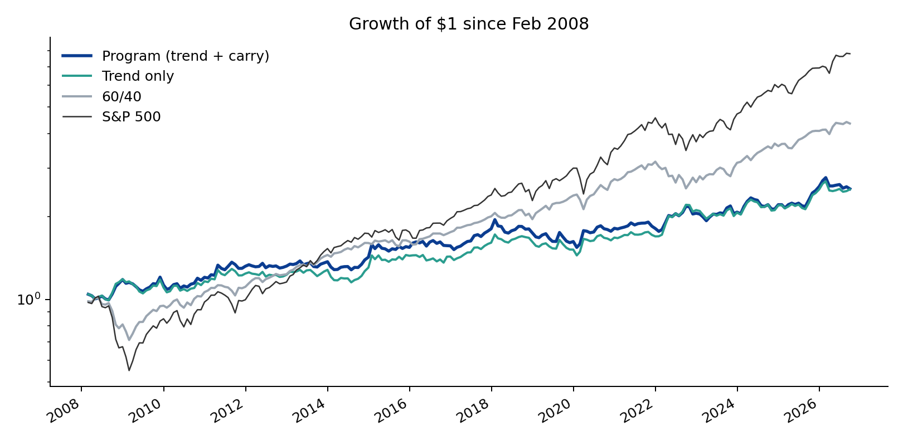
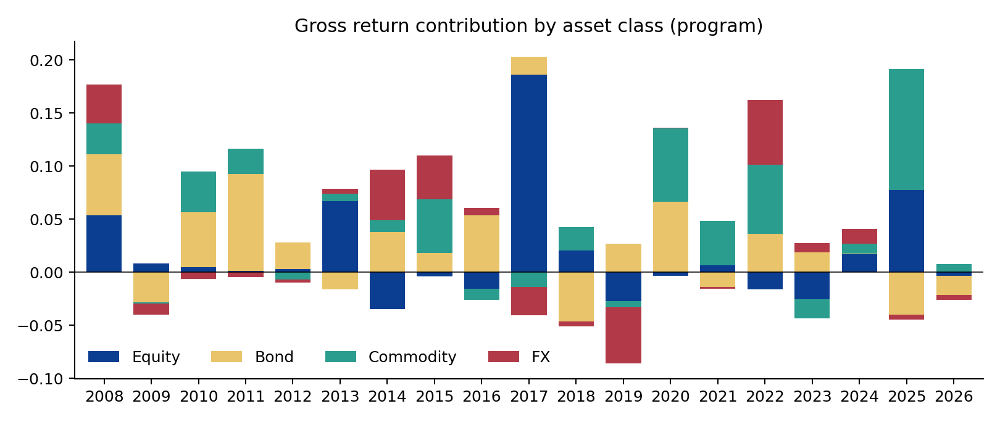
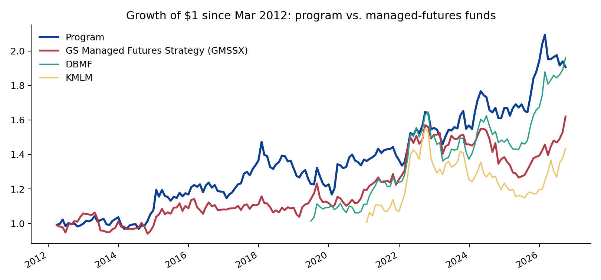
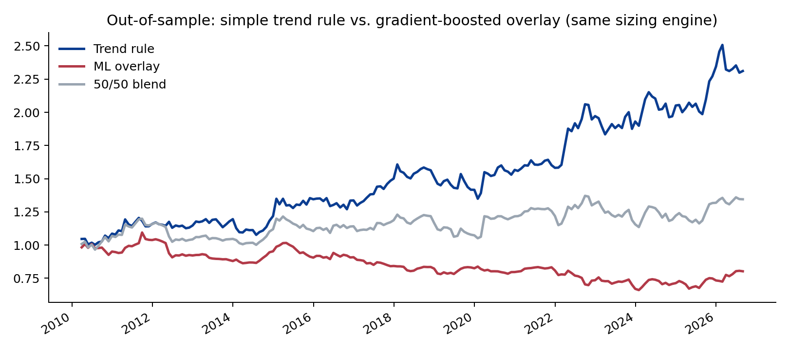

Cross-Asset Trend & Carry Program — and a test of ML against simple rules
Part 3 of the GS QIS product review: a systematic macro program across 21 equity, bond, currency and commodity markets, benchmarked against Goldman Sachs' Managed Futures Strategy Fund (GMSSX), with a gradient-boosted overlay tested under purged walk-forward validation. Hugo Hoenn, September 2026.
The QIS posting describes a team that "manages exposures to global stock, bond, currency, and commodity markets to generate excess return... leveraging the latest technology, including Artificial Intelligence techniques." This project does both halves, and reports what each did.
1. The program
Markets. 21 liquid markets via total-return ETFs (excess return over T-bills ≈ a collateralised futures position, with roll yield embedded): 6 equity indices, 4 government bond buckets, 6 commodities, 5 currencies. History from 2007–08, so the sample includes the financial crisis.
Signals. Time-series momentum at 1, 3 and 12 months (return scaled by volatility, clipped, averaged), and carry where it can be measured from free data: FX carry from 3-month interbank rate differentials (FRED, lagged a month), bond carry from the US term spread. Equities and commodities are trend only. Signal = trend for equities and commodities; 0.75 trend + 0.25 carry for FX and bonds.
Sizing. Each market scaled to a volatility target, equal risk to each of the four asset classes, portfolio scaled to 10% ex-ante volatility on a 60-day covariance, gross leverage capped at 3×. Monthly rebalance. Costs 10 bps per unit of turnover, which is ETF-like and conservative: at futures-like costs of 3 bps the annualised return would be 6.6% instead of 5.1%.

2. Results, Feb 2008 – Sep 2026
| Ann. return | Vol | Sharpe | Max DD | Skew | Corr S&P | Corr 60/40 | Corr factor strat. | |
|---|---|---|---|---|---|---|---|---|
| Trend + carry (program) | 5.1% | 10.2% | 0.41 | -20.7% | 0.52 | -0.15 | -0.15 | -0.10 |
| Trend only | 5.1% | 10.3% | 0.41 | -16.1% | 0.54 | -0.18 | -0.19 | -0.14 |
| Carry only | 1.9% | 7.9% | 0.11 | -34.4% | -0.19 | 0.09 | 0.15 | 0.12 |
| S&P 500 | 11.6% | 15.6% | 0.71 | -46.3% | -0.57 | 1.00 | 0.98 | 0.98 |
| 60/40 | 8.2% | 10.0% | 0.71 | -29.7% | -0.60 | 0.98 | 1.00 | 0.97 |
The program earned 5.1% a year at a 0.41 Sharpe with a -20.7% worst drawdown, positive skew, and a correlation of -0.15 to the S&P 500, -0.15 to 60/40 and -0.10 to the multi-factor equity strategy from Part 0. That combination — modest Sharpe, positive skew, negative correlation to everything a client already owns — is the entire case for trend following, and it showed up on schedule:
| Period | Program | Trend only | GMSSX | S&P 500 | 60/40 |
|---|---|---|---|---|---|
| GFC (Feb 2008–Feb 2009) | +15.2% | +16.2% | n/a | -44.9% | -28.8% |
| Aug–Sep 2011 | +1.6% | +0.8% | n/a | -12.1% | -6.4% |
| Q4 2018 | -5.2% | -4.6% | +1.3% | -13.5% | -7.4% |
| COVID (Feb–Mar 2020) | +15.0% | +14.8% | +4.9% | -19.4% | -11.5% |
| 2022 (full year) | +13.7% | +24.6% | +20.6% | -18.2% | -15.8% |
| Trend winter (2012–2019) | +23.0% | +22.2% | +11.8% | +200.9% | +114.8% |
The carry sleeve, as built here from free data, added nothing: on its own it earned a 0.11 Sharpe with a -34.4% drawdown, and its long-duration tilt cost the program 11 points of return in 2022 relative to trend alone. It is kept in the headline version because it was pre-specified, and reported so a reader can see it. A carry signal worth having needs futures-curve data for commodities and equities, which is the first upgrade.

| Year | Program | Trend only | GMSSX | S&P 500 |
|---|---|---|---|---|
| 2008 | +18.1% | +18.4% | +0.0% | -32.7% |
| 2009 | -4.6% | -6.8% | +0.0% | +26.4% |
| 2010 | +6.8% | +5.4% | +0.0% | +15.1% |
| 2011 | +9.7% | +6.7% | +0.0% | +1.9% |
| 2012 | +0.1% | -1.0% | +5.8% | +16.0% |
| 2013 | +3.8% | +4.2% | -4.4% | +32.3% |
| 2014 | +3.9% | +1.9% | -2.6% | +13.5% |
| 2015 | +8.5% | +10.4% | +10.4% | +1.2% |
| 2016 | +1.3% | -0.6% | -0.6% | +12.0% |
| 2017 | +15.4% | +12.3% | +2.7% | +21.7% |
| 2018 | -3.4% | +0.7% | -1.7% | -4.6% |
| 2019 | -7.0% | -6.3% | +2.4% | +31.2% |
| 2020 | +11.7% | +10.6% | +7.0% | +18.3% |
| 2021 | -0.2% | +1.0% | +5.0% | +28.7% |
| 2022 | +13.7% | +24.6% | +20.6% | -18.2% |
| 2023 | +0.9% | -2.1% | -3.7% | +26.2% |
| 2024 | +6.4% | +6.2% | -5.1% | +24.9% |
| 2025 | +16.5% | +14.3% | +0.6% | +17.7% |
| 2026 | -2.0% | -0.1% | +16.3% | +12.7% |
3. Against Goldman's managed-futures fund
GMSSX (QIS, since Feb 2012) is the natural comparison. Common window from Mar 2012:
| Ann. return | Vol | Sharpe | Max DD | Skew | Corr S&P | Corr 60/40 | Corr factor strat. | |
|---|---|---|---|---|---|---|---|---|
| Program (trend + carry) | 4.5% | 10.1% | 0.34 | -20.7% | 0.59 | -0.16 | -0.16 | -0.11 |
| Program (trend only) | 5.0% | 10.2% | 0.38 | -16.1% | 0.60 | -0.19 | -0.21 | -0.14 |
| GS Managed Futures Strategy (GMSSX) | 3.4% | 9.3% | 0.24 | -19.4% | -0.22 | -0.09 | -0.11 | -0.06 |
| DBMF (since May 2019) | 9.6% | 11.2% | 0.64 | -17.3% | 0.00 | -0.15 | -0.22 | -0.12 |
| KMLM (since Dec 2020) | 6.5% | 13.0% | 0.31 | -25.9% | 0.10 | -0.36 | -0.45 | -0.37 |
| 60/40 | 9.4% | 9.1% | 0.87 | -20.0% | -0.39 | 0.98 | 1.00 | 0.96 |
The program's correlation to GMSSX is 0.63 at 8.4% tracking error: the same family of bets, implemented differently. Over the fund's life the program earned a higher Sharpe (0.34 vs 0.24) with positive rather than negative skew; GMSSX did better in Q4 2018 and, notably, in 2022 (+20.6% vs +13.7% for the program, +24.6% for trend alone). The newer trend ETFs (DBMF, KMLM) have short records that begin after the 2012–19 "trend winter", so their Sharpe ratios are not comparable. This is a backtest against a live fund with real costs and constraints, so the gap should be read as "in the same league", not "better".

4. Does machine learning help? Tested honestly, no.
A gradient-boosted model (sklearn
HistGradientBoostingRegressor, depth 3, 200 trees) predicts
each market's next-month volatility-scaled excess return from twelve
features: trend at four horizons, carry, volatility, the volatility
ratio, 12-month drawdown and asset class. It is trained on a pooled
panel of ~5,000 market-months and re-fitted every January on all data
ending two months earlier — an expanding window with a one-month
embargo, so no training target overlaps a prediction. Predictions are
converted to positions and run through the identical sizing engine.
| Ann. return | Vol | Sharpe | Max DD | Skew | |
|---|---|---|---|---|---|
| Trend rule (same window) | 5.2% | 10.1% | 0.42 | -16.1% | 0.59 |
| ML overlay (gradient boosting) | -1.3% | 7.3% | -0.33 | -39.6% | 0.17 |
| 50/50 blend | 1.8% | 8.8% | 0.09 | -17.2% | 0.96 |
Out of sample from Mar 2010, the model's monthly rank correlation with realised returns was 0.03 (t = 1.5) against 0.06 (t = 2.4) for the plain trend rule. As a strategy it lost money. Permutation importance shows it leaning on the same trend features the rule uses, plus volatility:
| Feature | 2016 | 2020 | 2024 |
|---|---|---|---|
| z1 | 0.023 | 0.040 | 0.037 |
| z3 | 0.061 | 0.024 | 0.029 |
| z6 | 0.068 | 0.048 | 0.029 |
| z12 | 0.047 | 0.040 | 0.028 |
| carry | 0.017 | 0.017 | 0.011 |
| vol | 0.054 | 0.030 | 0.032 |
| vol_ratio | 0.039 | 0.031 | 0.041 |
| dd12 | 0.036 | 0.028 | 0.022 |
The reading is not that ML cannot work in this setting; it is that with ~5,000 noisy observations and a signal-to-noise ratio this low, a flexible learner overfits and a rule with a 100-year literature behind it does not. The blend did not rescue it. This is the result a QIS team would expect and the one an applicant is least tempted to publish, which is why it is here.

What this cannot tell you
- ETF proxies have shorter histories and higher costs than futures, and no true commodity or equity carry. A futures implementation with curve data is the honest next step.
- 18 years is one full trend cycle: a crisis, a seven-year winter, a second crisis, an inflation shock. Sharpe 0.4 is consistent with the long-run evidence for trend and cannot be distinguished from 0.2 or 0.6 on this sample.
- The comparison to GMSSX is backtest-versus-live and favours the backtest.
- One ML specification was tested. A heavily regularised linear model or monotonic constraints encoding trend priors might close the gap; they were not tried, to keep the test pre-specified.
Code
src/data.py (prices, FRED rates),
src/strategy.py (signals, sizing, simulation, sleeves),
src/ml.py (panel features, purged walk-forward,
importance), src/analysis.py (metrics, benchmarks, crisis
table, attribution, charts). Tables in output/*.csv.
Independent research for discussion. Not affiliated with or endorsed by Goldman Sachs. Not investment advice.